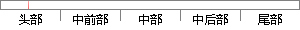

双站定位系统从信号中提取出辐射源信号到观测站之间的到达时间差，并结合方位角可以实现无源定位。
片段位置图

相似结果|
相似片段 1：之间的径向距离，结合测角系统测得的方位信息就可以实现对辐射源的定位。这种结合可以减少观测站的机动，提高辐射源的可观测性。该方法多用于对连续波或持续时间较长的信号辐射源进行定位，其精度高于单纯的测向定位法
相似片段 2：观测站的信息从一定程度上能反映出目标的位置信息，如果能建立起三者之间的联系，必然给定位系统带来新的信息量。假设定位系统测量出观测站位置，并从多径信号中提取出散射体的相关信息，那么便可以形成对目标信号参数
相似片段 3：常见于固定多站定位系统中，目标的辐射源信息到达各个观测站的时间不同产生了信号到达时间差。通常一般采用三站定位，形成多个时差信号，通过匹配滤波以及时差定位算法，就能解出目标的位置。该方法要求各个观测站之间
|
※ 片段修改建议 ※
近似词参考：- 系统：体系
- 信号：旌旗灯号
- 取出：掏出
- 信号：旌旗灯号
- 到达：达到
- 结合：连系 联合
系统自动生成语句：双站定位体系从旌旗灯号中提掏出辐射源旌旗灯号到观测站之间的达到时间差，并连系方位角可以实现无源定位。
注：本片段修改建议为系统自动生成，仅供参考。